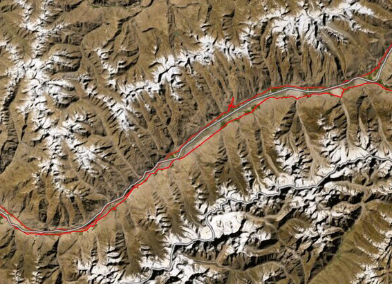

NATIONAL GEOGRAPHIC
New York City has a turtle problem
ANIMAL
NEW YORK CITYBright green and viscous, Morningside Pond looks like a vat of unappealing pea soup. Styrofoam cups and plastic bags cling to the pond’s edge, bound in place by bubbles of green foam. This is, perhaps, what’s to be expected of an artificial pond in the center of a New York City park.
Still, there is life here. A stream flows over the exposed bedrock opposite the pond’s benches, and a few weeping willows bend toward the shore. And then there’s the row of nearly a hundred turtles lined up along the pond’s edge, glistening in the springtime sun.
These are red eared sliders, the most popular turtle in the American pet trade. Native to Mississippi River and Gulf of Mexico, they’re bred by turtle farmers on an industrial scale and sold wholesale to pet retailers. More than 52 million red eared sliders were legally exported from the United States between 1989 and 1997 , many of them to China, according to the International Union for Conservation of Nature. Many more are sold illegally through a network of pet shops, street vendors, and websites.
Red-eared sliders so named for the brilliant red marks on their heads that look like ears are consistently designated one of the world’s hundred worst invasive species by the IUCN. When pet owners realize the reptiles require large tanks and expensive filtration systems, and can live up to 50 years, they often dump them outside. (Read why you should never release exotic pets into the wild.)
Indeed, up to 90 percent of the sliders in this pond the vast majority of which are hidden beneath the murky water are likely former pets, says Allen Salzberg, publisher of the HerpDigest Newsletter and longtime member of the nonprofit New York Turtle and Tortoise Society.
But these abandoned pets are becoming a major nuisance to New York City’s urban ecosystem crowding out native turtle species, creating harmful algal blooms in local waterways, and possibly exposing humans to salmonella.
The phenomenon is not unique to New York: The invasive reptiles now live in nearly every U.S. state, including Hawaii. Though it's difficult to tally the turtle’s invasive population, users of the iNaturalist app have documented tens of thousands of verified red-eared slider observations in nearly every U.S. residential and urban region over the past decade.
“They were super successful, as we all know now,” says Paul Curtis, a population ecologist at Cornell University.
Adaptable species
Even though they’re Southerners, red-eared sliders have adapted well to life in the Big Apple. “They’re total optimists,” Salzberg says. “They make the most of whatever they have.”
For instance, the species can live for months without food, slowing their metabolism when resources are scarce. And when food is prevalent, as it is in Morningside Park, they keep growing. In fact, many of the sliders in Morningside Pond are overweight, with unusually thick legs and necks. It also doesn’t help that the reptiles will eat pretty much anything, including fish, insects, vegetation, and even human snacks like potato chips. Their sturdy carapaces and speed in the water also provide tough defenses against predators such as raccoons and coyotes.
Comments :
- john Very good
- john Very good
Leave a Reply
Your email address will not be published. Required fields are marked*
Related posts:
-
The unexpected twists on a writer's 24,000 mile walk across the world
The daily GPS tracks logged by the Out of Eden Walk, a 24,000-mile foot journey across the world along the pathways of our Stone Age ancestors, contain hidden stories in map form.
View article -
 In Myanmar, everyone swears by this natural skin cosmetic
In Myanmar, everyone swears by this natural skin cosmeticIt is impossible to say. The primordial evidence the hides of Stone Age peoples has long since turned to dust. Yet clues remain. A rouge-colored mineral called ocher has been discovered, finely ground and ready for application
View article -
 The holidays can take a toll on your gut health. Here’s how to deal.
The holidays can take a toll on your gut health. Here’s how to deal.What you consume affects your gut microbiome, a community of microscopic organisms including bacteria, viruses, fungi, and parasites. And its importance can’t be overstated. This tiny world helps protect the body against
View article